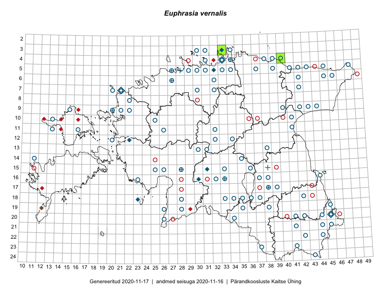

Euphrasia vernalis — kevad-silmarohi
Orobanchaceae :: Euphrasia vernalis List (115); Euphrasia stricta var. tenuis (Brenner) Jalas (33); Euphrasia tenuis (Brenner) Wettst. (13)

Kaart põhineb 162 kirjel:
vaatlusi 1
herbaareksemplare 160
PKÜ kirjeid1 1
Taime kaasaegsed ja ajaloolised leiukohad asuvad 101 ruudus.
Tingmärgid ja ruutude arvud periooditi (U2 / V3 )
█ 2006–2020 (2/–)
◆/◇ 1971–2005 (10/15)
○ 1921–1970 (91/78)
+ kuni 1920 (6/2)
× hävinud (–/0)
? kaheldav (–/0)
| Ruut | Leidja(d) | Leiuaeg | Kirje |
|---|---|---|---|
| 12-22 | H. Krall | 1979–1980 | ruut/ala: Euphrasia tenuis (Brenner) Wettst. |
| 06-46 | T. Lippmaa | 1932-07-09 | TU257113: Euphrasia stricta var. tenuis (Brenner) Jalas |
| 23-41 | L. Pihlapuu | 1956-07-14 | TU257133: Euphrasia stricta var. tenuis (Brenner) Jalas |
| 09-43 | S. Veldre | 1953-06-18 | TU257275: Euphrasia stricta var. tenuis (Brenner) Jalas |
| 23-37 | E. Lellep | 1949-06-28 | TU257290: Euphrasia stricta var. tenuis (Brenner) Jalas |
| 11-16 | E. Truus | 1930-06-12 | TU257313: Euphrasia stricta var. tenuis (Brenner) Jalas |
| 12-20 | Albert Üksip | 1932-07-02 | TU257329: Euphrasia tenuis (Brenner) Wettst. |
| 16-37 | Albert Üksip | 1934-07-03 | TU257332: Euphrasia stricta var. tenuis (Brenner) Jalas |
| 05-29 | B. Saarson | 1933-06-26 | TU257334: Euphrasia stricta var. tenuis (Brenner) Jalas |
| 15-28 | H. Mihkelson | 1924-06-26 | TU257310: Euphrasia stricta var. tenuis (Brenner) Jalas |
| 12-34 | 1923-06-12 | TU257337: Euphrasia stricta var. tenuis (Brenner) Jalas | |
| 21-41 | E. Lukats | 1922-07-14 | TU257340: Euphrasia stricta var. tenuis (Brenner) Jalas |
| 18-33 | M. Kangur | 1959-06-19 | TU257352: Euphrasia tenuis (Brenner) Wettst. |
| 15-26 | E. Leis | 1924-06-21 | TU257354: Euphrasia stricta var. tenuis (Brenner) Jalas |
| 18-37 | K. Eichwald | 1934-06-28 | TU257356: Euphrasia stricta var. tenuis (Brenner) Jalas |
| 18-37 | K. Eichwald | 1934-06-28 | TU257357: Euphrasia stricta var. tenuis (Brenner) Jalas |
| 16-32 | V. Lilleleht | 1959-06-18 | TU257362: Euphrasia stricta var. tenuis (Brenner) Jalas |
| 16-32 | J. Tenson | 1959-06-20 | TU257367: Euphrasia stricta var. tenuis (Brenner) Jalas |
| 16-32 | J. Viidalepp | 1959-06-19 | TU257368: Euphrasia stricta var. tenuis (Brenner) Jalas |
| 15-33 | L. Pihlapuu | 1958-06-28 | TU257375: Euphrasia stricta var. tenuis (Brenner) Jalas |
| 22-44 | T. Lippmaa | 1922-06-18 | TU257388: Euphrasia stricta var. tenuis (Brenner) Jalas |
| 13-31 | T. Lippmaa | 1930-06-26 | TU260887: Euphrasia vernalis List |
| 18-33 | T. Lippmaa | 1930-07-09 | TU260888: Euphrasia vernalis List |
| 18-35 | Alma Saare, Vilma Kuusk | 1959-08-30 | TAA0036688: Euphrasia vernalis List |
| 07-21 | A. Üksip, Silvia Talts | 1960-07-12 | TAA0036709: Euphrasia vernalis List |
| 10-25 | Gustav Vilbaste | 1933-06-27 | TAA0036782: Euphrasia vernalis List |
| 07-20 | Gustav Vilbaste | 1934-07-11 | TAA0036793: Euphrasia vernalis List |
| 07-20 | Gustav Vilbaste | 1934-07-11 | TAA0036794: Euphrasia vernalis List |
| 07-20 | Gustav Vilbaste | 1934-07-11 | TAA0036795: Euphrasia vernalis List |
| 07-21 | Gustav Vilbaste | 1933-06-30 | TAA0036808: Euphrasia vernalis List |
| 16-44 | M. Kask, Enno Tubli | 1968-06-27 | TAA0037102: Euphrasia vernalis List |
| 07-20 | Gustav Vilbaste | 1934-07-11 | TAA0037692: Euphrasia vernalis List |
| 05-30 | Gustav Vilbaste | 1923-08 | TAA0037694: Euphrasia vernalis List |
| 04-33 | Alma Saare | 1974-07-20 | TAA0037408: Euphrasia vernalis List |
| 04-39 | Gustav Vilbaste | 1927-07-12 | TAA0037386: Euphrasia stricta var. tenuis (Brenner) Jalas |
| 03-31 | Gustav Vilbaste | 1929-06-30 | TAA0037387: Euphrasia stricta var. tenuis (Brenner) Jalas |
| 04-39 | Gustav Vilbaste | 1925-06-23 | TAA0037388: Euphrasia stricta var. tenuis (Brenner) Jalas |
| 04-39 | Gustav Vilbaste | 1925-06-15 | TAA0037389: Euphrasia stricta var. tenuis (Brenner) Jalas |
| 06-46 | Gustav Vilbaste | 1929-06-21 | TAA0037396: Euphrasia vernalis List |
| 05-32 | M. Kask | 1977-07-08 | TAA0037403: Euphrasia stricta var. tenuis (Brenner) Jalas |
| 22-42 | T. Timm | 1955-07-03 | TAA0037404: Euphrasia stricta var. tenuis (Brenner) Jalas |
| 05-32 | J. Kähr | 1977-07-07 | TAA0037405: Euphrasia stricta var. tenuis (Brenner) Jalas |
| 05-42 | Agnes Ojaveer, H. Tamm | 1961-06-29 | TAA0037406: Euphrasia stricta var. tenuis (Brenner) Jalas |
| 09-40 | Vilma Kuusk | 1963-07-01 | TAA0037295: Euphrasia vernalis List |
| 07-42 | H. Tamm, S. Pärn | 1961-06-28 | TAA0037296: Euphrasia vernalis List |
| 05-33 | Leida Karu, Visolde Puusepp | 1958-06-29 | TAA0037297: Euphrasia vernalis List |
| 07-32 | Leida Karu, Visolde Puusepp | 1958-07-03 | TAA0037298: Euphrasia vernalis List |
| 20-41 | M. Kask | 1960-06-21 | TAA0037299: Euphrasia vernalis List |
| 05-33 | Salme Kask | 1958-06-29 | TAA0037300: Euphrasia vernalis List |
| 17-39 | Silvia Talts | 1962-06-27 | TAA0037301: Euphrasia vernalis List |
| 17-39 | Silvia Talts | 1962-06-27 | TAA0037302: Euphrasia vernalis List |
| 18-36 | M. Kask | 1962-06-29 | TAA0037303: Euphrasia vernalis List |
| 17-39 | Alma Saare | 1962-06-27 | TAA0037304: Euphrasia vernalis List |
| 16-38 | Agnes Ojaveer, S. Pärn | 1962-07-03 | TAA0037305: Euphrasia vernalis List |
| 21-45 | Vilma Kuusk, H. Karu | 1957-06-27 | TAA0037306: Euphrasia vernalis List |
| 20-44 | H. Karu, J. Vilbaste | 1957-06-22 | TAA0037307: Euphrasia vernalis List |
| 18-34 | E. Kalmet, H. Karu | 1959-06-08 | TAA0037308: Euphrasia vernalis List |
| 22-44 | H. Tamm, E. Kalmet | 1957-06-27 | TAA0037309: Euphrasia vernalis List |
| 19-45 | Visolde Puusepp, E. Kalmet | 1957-06-29 | TAA0037310: Euphrasia vernalis List |
| 04-31 | M. Kask, Alma Saare | 1958-06-17 | TAA0037311: Euphrasia vernalis List |
| 04-33 | Leida Karu, Visolde Puusepp | 1958-06-22 | TAA0037312: Euphrasia vernalis List |
| 04-33 | M. Kask, Alma Saare | 1958-06-21 | TAA0037313: Euphrasia vernalis List |
| 04-33 | M. Kask, Alma Saare | 1958-06-21 | TAA0037314: Euphrasia vernalis List |
| 05-39 | H. Tamm, H. Tuvikene | 1961-06-21 | TAA0037315: Euphrasia vernalis List |
| 06-45 | K. Lang, Ella Tammemägi | 1961-06-14 | TAA0037316: Euphrasia vernalis List |
| 09-20 | H. Karu, H. Rebassoo | 1956-06-21 | TAA0037317: Euphrasia vernalis List |
| 04-40 | Visolde Puusepp, Alma Saare | 1961-06-20 | TAA0037318: Euphrasia vernalis List |
| 05-43 | Agnes Ojaveer, H. Tamm | 1961-06-15 | TAA0037319: Euphrasia vernalis List |
| 09-21 | K. Lang, Ella Tammemägi | 1960-07-15 | TAA0037320: Euphrasia vernalis List |
| 05-45 | K. Lang, Ella Tammemägi | 1961-06-15 | TAA0037321: Euphrasia vernalis List |
| 21-44 | Linda Viljasoo | 1957-06-22 | TAA0037322: Euphrasia vernalis List |
| 21-44 | Linda Viljasoo | 1957-06-22 | TAA0037323: Euphrasia vernalis List |
| 19-35 | M. Kask, Salme Kask | 1959-06-11 | TAA0037324: Euphrasia vernalis List |
| 22-44 | Visolde Puusepp | 1957-06-18 | TAA0037325: Euphrasia vernalis List |
| 09-22 | Agnes Ojaveer, Visolde Puusepp | 1960-07-07 | TAA0037326: Euphrasia vernalis List |
| 06-42 | Vilma Kuusk, Alma Saare | 1961-06-30 | TAA0037327: Euphrasia vernalis List |
| 06-32 | Silvia Talts | 1958-07-01 | TAA0037328: Euphrasia vernalis List |
| 06-32 | Leida Karu, Aino Sooman | 1958-07-01 | TAA0037329: Euphrasia vernalis List |
| 04-34 | Linda Viljasoo, Agnes Ojaveer | 1958-06-30 | TAA0037330: Euphrasia vernalis List |
| 20-45 | Salme Kask | 1957-06-28 | TAA0037331: Euphrasia vernalis List |
| 21-45 | A. Dessler, Silvia Talts | 1957-06-27 | TAA0037332: Euphrasia vernalis List |
| 22-44 | H. Tamm | 1957-06-27 | TAA0037333: Euphrasia vernalis List |
| 20-42 | Visolde Puusepp | 1957-06-20 | TAA0037334: Euphrasia vernalis List |
| 08-22 | Viiu Hein, Malle Simson | 1960-07-06 | TAA0037335: Euphrasia vernalis List |
| 05-41 | Agnes Ojaveer, Ella Tammemägi | 1961-07-03 | TAA0037336: Euphrasia vernalis List |
| 04-34 | Silvia Talts | 1958-06-30 | TAA0037337: Euphrasia vernalis List |
| 07-30 | Silvia Talts | 1958-07-08 | TAA0037338: Euphrasia vernalis List |
| 05-34 | Linda Viljasoo, Alma Saare | 1958-06-28 | TAA0037339: Euphrasia vernalis List |
| 15-38 | 1890-06-02 | TAA0037340: Euphrasia vernalis List | |
| 15-31 | M. Kask | 1983-06-21 | TAA0037341: Euphrasia vernalis List |
| 07-21 | Heljo Krall | 1981-07-06 | TAA0037342: Euphrasia vernalis List |
| 07-21 | Liivia Laasimer | 1981-07-01 | TAA0037343: Euphrasia vernalis List |
| 04-33 | Vilma Kuusk, Linda Viljasoo | 1958-06-22 | TAA0037344: Euphrasia vernalis List |
| 03-34 | Linda Viljasoo | 1958-06-27 | TAA0037345: Euphrasia vernalis List |
| 11-13 | Visolde Puusepp | 1956-06-30 | TAA0037346: Euphrasia vernalis List |
| 09-15 | M. Kask | 1956-06-29 | TAA0037347: Euphrasia vernalis List |
| 05-31 | Ellen Vilbaste, Gustav Vilbaste, Paul Thomson | 1922-06-15 | TAA0037348: Euphrasia vernalis List |
| 15-31 | M. Kask | 1983-06-21 | TAA0037349: Euphrasia vernalis List |
| 15-31 | M. Kask | 1983-06-21 | TAA0037350: Euphrasia vernalis List |
| 07-21 | Linda Viljasoo | 1981-07-06 | TAA0037351: Euphrasia vernalis List |
| 04-33 | M. Kask, Alma Saare | 1974-07-29 | TAA0037352: Euphrasia vernalis List |
| 10-41 | Silvia Talts | 1963-07-01 | TAA0037353: Euphrasia vernalis List |
| 20-41 | M. Kask | 1969-06-28 | TAA0037354: Euphrasia vernalis List |
| 09-40 | M. Kask | 1963-06-25 | TAA0037355: Euphrasia vernalis List |
| 05-37 | Visolde Puusepp, Raivo Läst | 1963-06-20 | TAA0037356: Euphrasia vernalis List |
| 14-35 | Visolde Puusepp | 1965-06-28 | TAA0037357: Euphrasia vernalis List |
| 04-38 | M. Kask, U. Nõmm | 1963-06-17 | TAA0037358: Euphrasia vernalis List |
| 13-30 | Agnes Ojaveer, H. Rebassoo | 1965-06-25 | TAA0037359: Euphrasia vernalis List |
| 11-32 | M. Kask | 1966-06-18 | TAA0037360: Euphrasia vernalis List |
| 13-38 | Agnes Ojaveer, K. Kull | 1966-06-23 | TAA0037361: Euphrasia vernalis List |
| 13-38 | Agnes Ojaveer, K. Kull | 1966-06-23 | TAA0037362: Euphrasia vernalis List |
| 15-33 | Silvia Talts | 1965-06-30 | TAA0037363: Euphrasia vernalis List |
| 12-32 | M. Kask, Agnes Ojaveer | 1965-07-02 | TAA0037364: Euphrasia vernalis List |
| 17-38 | M. Kask | 1962-07-03 | TAA0037365: Euphrasia vernalis List |
| 03-33 | M. Kask | 1977-07-11 | TAA0037366: Euphrasia vernalis List |
| 05-32 | M. Kask | 1977-07-09 | TAA0037367: Euphrasia vernalis List |
| 14-11 | Elsa Pastak | 1934-06-06 | TAA0037368: Euphrasia vernalis List |
| 11-41 | M. Kask | 1963-07-01 | TAA0037369: Euphrasia vernalis List |
| 09-42 | Agnes Ojaveer | 1963-06-25 | TAA0037370: Euphrasia vernalis List |
| 09-43 | M. Kask, Raivo Läst | 1963-06-28 | TAA0037371: Euphrasia vernalis List |
| 12-22 | Heljo Krall | 1979-07-13 | TAA0037372: Euphrasia vernalis List |
| 18-23 | M. Kask | 1973-06-12 | TAA0037374: Euphrasia vernalis List |
| 11-16 | M. Kask, H. Rebassoo | 1956-07-01 | TAA0037375: Euphrasia vernalis List |
| 04-34 | Silvia Talts | 1958-06-27 | TAA0037376: Euphrasia vernalis List |
| 05-41 | K. Pork | 1953-07-01 | TAA0037377: Euphrasia vernalis List |
| 05-41 | K. Pork | 1953-07-01 | TAA0037378: Euphrasia vernalis List |
| 20-34 | Salme Kask, Helga Tamm | 1959-06-09 | TAA0037379: Euphrasia vernalis List |
| 10-13 | M. Kask | 1956-06-30 | TAA0037380: Euphrasia vernalis List |
| 15-36 | K. Pork | 1956-06-13 | TAA0037381: Euphrasia vernalis List |
| 06-32 | Ellen Muru | 1958-07-01 | TAA0037382: Euphrasia vernalis List |
| 05-33 | Salme Kask | 1958-07-01 | TAA0037383: Euphrasia vernalis List |
| 19-26 | T. Lippmaa | 1928-07-10 | TU270468: Euphrasia tenuis (Brenner) Wettst. |
| 19-26 | T. Lippmaa | 1928-07-10 | TU270469: Euphrasia tenuis (Brenner) Wettst. |
| 11-26 | Endel Rumma | 1933-07-28 | TU270470: Euphrasia vernalis List |
| 16-23 | T. Lippmaa | 1930-07-15 | TU270471: Euphrasia vernalis List |
| 16-30 | Riho Kõiveer | 1976-06-27 | TU270474: Euphrasia stricta var. tenuis (Brenner) Jalas |
| 16-30 | I. Toots | 1976-06-28 | TU270476: Euphrasia stricta var. tenuis (Brenner) Jalas |
| 16-30 | T. Sarapuu | 1976-06-26 | TU270477: Euphrasia stricta var. tenuis (Brenner) Jalas |
| 20-45 | G. Siniväli | 1972-06-27 | TU270481: Euphrasia stricta var. tenuis (Brenner) Jalas |
| 05-27 | P. Thomson | 1921-06-13 | TAM0029639: Euphrasia vernalis List |
| 05-27 | P. Thomson | 1921-06-13 | TAM0029640: Euphrasia vernalis List |
| 09-44 | H. Salasoo | 1932-06-13 | TAM0029642: Euphrasia vernalis List |
| 05-27 | P. Thomson | 1921-06-13 | TAM0064459: Euphrasia vernalis List |
| 09-20 | R. Lehbert | 1904-04-12 | TAM0069782: Euphrasia tenuis (Brenner) Wettst. |
| 16-30 | Arne Sellin | 1976-06-27 | TU270475: Euphrasia stricta var. tenuis (Brenner) Jalas |
| 06-27 | P. Glehn | 1856-06-29 | TAM0124858: Euphrasia tenuis (Brenner) Wettst. |
| 16-33 | G. Pahnsch | 1877-08-28 | TAM0124861: Euphrasia tenuis (Brenner) Wettst. |
| 05-28 | G. Pahnsch | 1869-07-03 | TAM0124862: Euphrasia tenuis (Brenner) Wettst. |
| 03-33 | Peedu Saar, Timo Luhamäe | 2016-07-26 | TAA0133081: Euphrasia vernalis List |
| 04-40 | Kaili Orav, Silvia Pihu | 2015-07-21 | TAA0134852: Euphrasia vernalis List |
| 19-28 | Ellen Vilbaste | 1965-07-03 | TAA0118799: Euphrasia tenuis (Brenner) Wettst. |
| 19-28 | Ellen Vilbaste | 1965-07-03 | TAA0118694: Euphrasia vernalis List |
| 20-45 | Maret Kask, Salme Kask | 1957-06-29 | TAA0143837: Euphrasia vernalis List |
| 24-43 | Rein Sander | 1968-07-16 | TAA0147232: Euphrasia vernalis List |
| 18-28 | Johannes Talts | 1925-07-16 | TAA0147956: Euphrasia vernalis List |
| 16-33 | Gustav Vilbaste | 1928-07-27 | TAA0150730: Euphrasia vernalis List |
| 05-48 | Albert Üksip | 1928-07-05 | TU257330: Euphrasia stricta var. tenuis (Brenner) Jalas |
| 18-28 | 1933-07 | TU257365: Euphrasia stricta var. tenuis (Brenner) Jalas | |
| 20-26 | T. Lippmaa | 1928-07-09 | TU270464: Euphrasia tenuis (Brenner) Wettst. |
| 20-26 | T. Lippmaa | 1928-07-09 | TU270465: Euphrasia tenuis (Brenner) Wettst. |
| 04-34 | R. Lehbert | 1909-06-29 | TAM0069754: Euphrasia tenuis (Brenner) Wettst. |
| 19-12 | 2003-06-17 | PKÜ: 10942 |
Pärandkoosluste Kaitse Ühingu (PKÜ) andmebaas sisaldab inventeeritud koosluste kirjeldusi ja liigiloendeid. Kõige enam on andmeid niidutaimede kohta.↩︎
Ruutude arv uue atlase andmekogu järgi. Muuhulgas arvestab vanemat herbaariumi, 2005. aasta atlase välitöölehtedelt uuesti digitaliseeritud andmeid jne. Uue atlase andmekogust pärinevad andmed on kaardile kantud siniste sümbolitega.↩︎
Ruutude arv 2005. aasta atlase (Kukk, T., Kull, T., Eesti taimede levikuatlas. Eesti Maaülikool, Põllumajandus- ja Keskkonnainstituut, Tartu, 2005) järgi. Andmeallikana on kasutatud levik.exe programmi, kus igas ruudus on registreeritud vaid uusim leid. Seetõttu on vanemate perioodide kohta andmed puudulikud. Kasutatud levik.exe andmestikus leidub mõningaid kõrvalekaldeid atlase trükis ilmunud versioonist, sagedamini tarnade ja käpaliste seas. Lisaks leidub selles andmestikus valik liike (peamiselt väheste leidudega tulnuktaimed), mille kaarte trükis ei avaldatud. Vana atlase andmed ruutudest, milles ei ole uue atlase andmekogus leide enne 2006. aastat, on kaardil esitatud punaste sümbolitega. Vana atlase andmetel hävinud ja kaheldavaid leiukohti pole hilisemate (taas)leidude põhjal korrigeeritud.↩︎